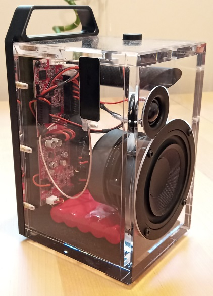
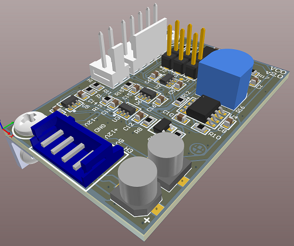
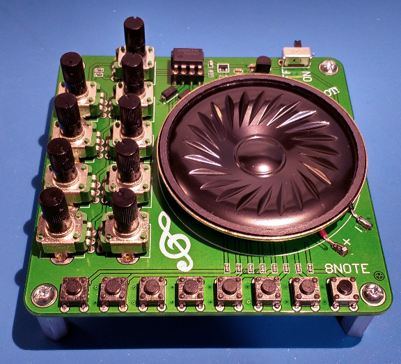
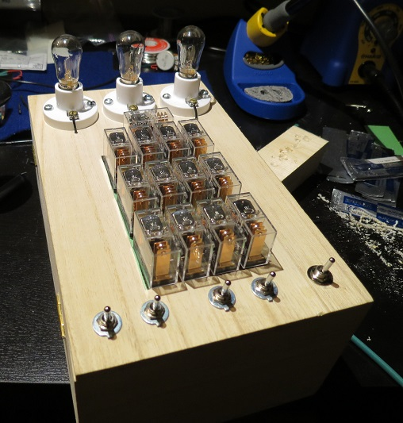
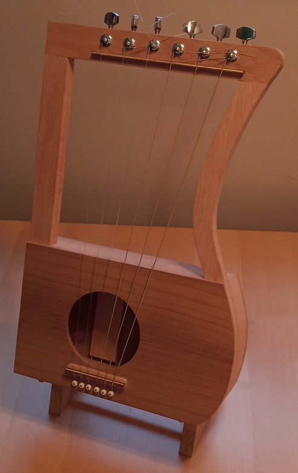
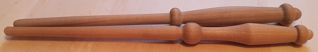
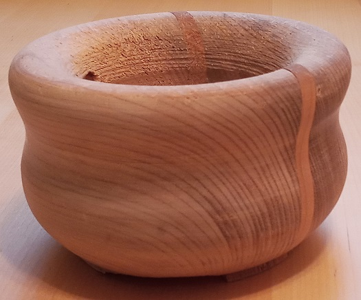
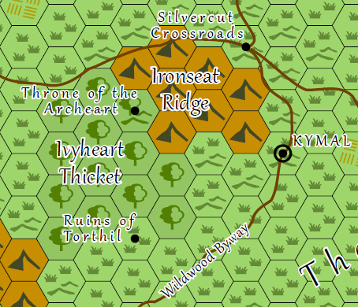
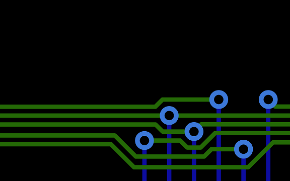

Professional Projects

Ryobi P761: Wireless audio receiver that runs off a drill battery.
Dillinger Labs Aquarius: Wireless audio receiver that uses Ecosystem modules.
Electronics
Eventually all my project logs will be moved here, but for now they can be viewed at hackaday.io/adamgulyas.
A modular synth voltage controlled oscillator based on a very old schermatic.
An eight note piano to test small scale production.
An entry for the Engineering Art Show I did while still in university. I presented it as a puzzle box. The light bulbs turn on
in a seemingly "random" order in response to the switches. It's really just a two bit full adder. I made it before I had any experience with PCB design, so
the inside is a mess of wire. I'm quite proud that, in all that chaos, I was methodical enough that it worked perfectly the first time I turned it on. I had
hoped to get a satisfying series of relay clicks when changing state, but they all happen near instantaneously. In the future I might make a PCB for a 1 bit
module that can be connected in series to add arbitrary length numbers.
I didn't look up how to make relay logic gates, instead deriving them by hand. You can see all the different variations I came up with in the log.
Project Log.
Demo Video.
The final lab of a course that taught how to program GPIO. Traffic lights are controlled with a finite state machine programmed in C. Github repo. Demo Video.
RF

Designing and testing a 2.44 GHz patch antenna.
Carpentry
At one point I spent about a year as a carpenter's apprentice at HERR Window & Door. In that time I built custom doors and windows, including the hinged egress windows shown on their site. It taught me to be methodical and precise, and to always be thinking about how what I was currently doing would affect the next steps in the process. Although I didn't take any pictures of the doors I made, below are some of the things I built in my own time.
Lyre made with wood from Home Depot and reused guitar parts. An entry for one of the UofA Engineering Art Shows.
Wands turned on a wood lathe. An entry for one of the UofA Engineering Art Shows.
Bowl. Maple with cherry insert. This was a failed project. I made a mistake with the lathe chisel and had a pretty bad gouge. Part of the tenon broke and it flew off the chuck. I couldn't remount it. It was supposed to be a gift, but now I just keep my keys in it.
Graphic Design
A hex map based off of Tal'Dorei. Nov 2020
A desktop background inspired by PCB routing. (Download here)